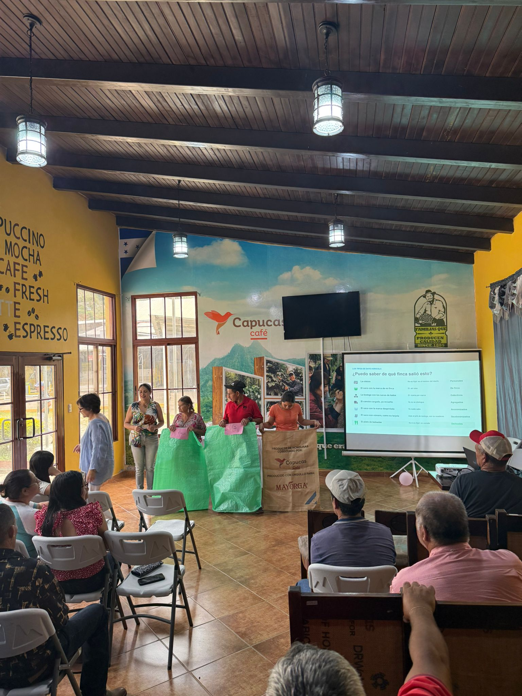
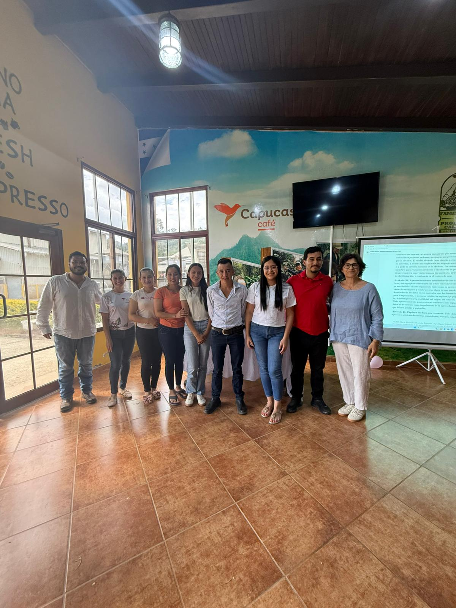

AgroDignity is data infrastructure for coffee cooperatives, built so producers govern their own farm data instead of simply supplying it. An elected, on-cooperative committee decides how that data is collected, used, and monetized — the same verified record serves whoever needs it downstream: EU regulations like EUDR, CSRD, and the Data Act, certification bodies, and the origin story importers and roasters tell their customers. One record, governed at the source, pays back to producers no matter who's asking.
Before any data moves, producers vote on the rules. Then GPS capture, satellite verification, and a compliance package that covers far more than one regulation.
A cooperative-wide workshop on data rights — consent, revocability, who benefits. Producers vote on a Data Governance Regulation and elect their own oversight committee before a single record is sold.
One visit. A field technician records GPS boundaries, practices, and consent using an offline app — no paperwork, no repeat visits.
Every farm is checked against satellite deforestation data, post-2020. PASS, REVIEW, or FAIL — with a tamper-proof audit trail.
A DDS-ready file, plus everything else the same record answers — CSRD, CSDDD, the EU Data Act, LkSG and more.


We ran a data governance workshop with a coffee cooperative in Copán, Honduras — producers surveyed before and after, in the room, on paper. Nobody scripted what happened next: by the end of the day, participants had elected their own Digital Governance Committee to oversee how farm data is collected, accessed, and used. It's one of several workshops we run with partner cooperatives across the region.
A single verified origin record answers EUDR, CSRD, CSDDD, the EU Data Act, LkSG and more — priced per container moved, not per company size.
Talk to our team ↗Your farm's second harvest is its data — captured, sold, and never returned. AgroDignity returns it: verified income, the insight others already have about you, and a real vote in how it's governed.
Talk to us ↗"The value of a farm's data should be decided by the people who grow it."
Whether you're an importer, a cooperative, a researcher, or just curious about what we're building — we'd love to hear from you.